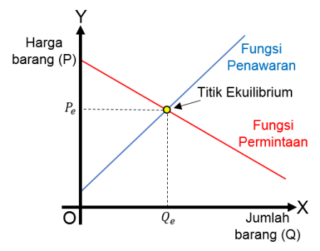
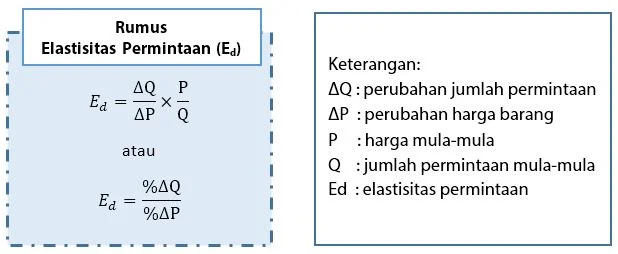
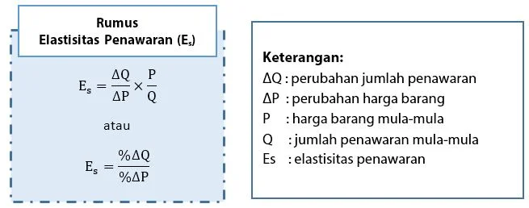

Beranda

Nama : Khalifa Widya Al Qurni
Tempat/Tanggal Lahir : Tangerang, 29 April 2007
Jenis Kelamin : Perempuan
NPM : C1B025144
Prodi : Manajemen Universitas Bengkulu
Motivasi:
Saya percaya setiap hal memiliki waktu terbaik menurut Allah SWT. Ketika sesuatu terasa lambat,
saya yakin itu bukan penundaan, melainkan proses agar saya tumbuh dan menjadi pribadi yang siap menerima takdir terbaik Allah SWT.
Materi Hukum Permintaan dan Penawaran
.png)
Dalam kehidupan sehari-hari, kita sering berhadapan dengan berbagai aktivitas ekonomi seperti membeli kebutuhan,
menjual barang, atau memperhatikan naik turunnya harga di pasar. Semua peristiwa itu mengikuti pola yang dapat dijelaskan
melalui Hukum Permintaan dan Penawaran.
1. Faktor yang Mempengaruhi Pergeseran Kurva
Permintaan:
- Pendapatan konsumen
- Selera
- Harga barang terkait
- Ekspektasi masa depan
- Jumlah penduduk
Penawaran:
- Harga sumber daya
- Harga barang lain
- Teknologi
- Ekspektasi masa depan
- Jumlah penjual
2. Kurva Permintaan dan Penawaran

3. Elastisitas Permintaan & Penawaran


4. Penerapan dalam Kehidupan Sehari-Hari
Contohnya, ketika harga beras naik, masyarakat mungkin mengurangi pembelian atau mencari alternatif.
Sementara ketika harga naik, petani meningkatkan produksi.
5. Kesimpulan
Hukum permintaan dan penawaran merupakan dasar utama dalam ekonomi mikro.
Konsep ini menjelaskan bagaimana harga dan jumlah barang terbentuk dari interaksi antara pembeli dan penjual.